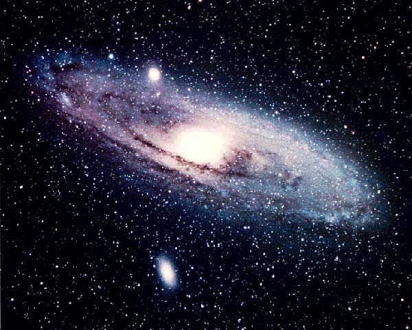

🪐 Панеты солнечной системы
В солнечной системе8 планет Они вращаются вокруг
Самая близкая планета
🌍️ Земля
Земля наш дом. На ней есть вода в житком виде и воздух для дыхания.
Поэтому земля подходит для жизни
🔴 Марс
Марс называют -
Учёные изучают марс, потому что он похож на Землю, больше чем другие планеты
🌕️ Луна
Луна - спутник земли. Она сетит ночью, потому что отражает свет Солнца.
На луне почти нет воздуха, а следы на поверхности могут сохраняться очень долго.
💥 Меркурий
Меркурий - бдижайшая планета к Солнцу Температура на поверхности Меркурия колеблется от −190 до +430 °C
❄️ Нептун
Нептун - самая холодная планета. Находится дальше всего от Солнца
✨плутон
Плутон не является планетой но находится в солнечной системе
Космические рекорды
Самая ближняя планета к солнцу: Меркурий
Самая дальняя планета от солнца: Нептун
Самая большая планета Юпитер
Самая маленька планета Плутон
⭐️ Звёзды
Звёзды - это огромные горячие шары газа.
Солнце - тоже звезда, просто она ближе всего к земле
Изображение космоса
